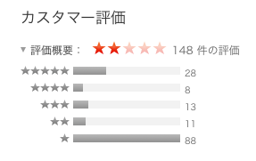

はじめに
海外配信者の音楽はほぼ訴えられないらしい。
うん、日本語難しいからね。訴える訴えない以前にまず見つけられないんだろう。
ともあれ、今回はそーゆー授業じゃないので著作権フリーの音楽、動画を使うこととする。
使用したもの
使用した動画は
NHKクリエイティブ・ライブラリー様、
音楽は
youtubeaudiolibrary様より『Tiptoe』。使用した編集ソフトはiMovie。
・・・。
…ん？？
純正品とは

著作権で制限掛けて検索したらこのアイコンしか出てこなかったが、アレだ、紫のヤツだ。
で、なんでpremiereじゃないかと言うと。
premiereでの編集が間に合わなかったのだ。結論を言うと。
で、後々重い腰を上げて編集を再開しようとしたらですね。
なんと体験期間が過ぎてたのですよ。一ヶ月経ったら使えなくなるのすっかり忘れてた←
そもそもadobeの諸々をお下がり？？的なもので済ませてたのが悪いんだけど。
とにかく、代わりにApple純正品のiMovieでなんとか使用、と。
まーこれが評価低いのなんの。

下手したらApple純正品最低評価なんじゃないだろうか。以下カスタマーレビュー
- 落ちる
- クラッシュしまくる
- 写真を読み込まない
- 使い物にならない
ちなみに、問題なく編集も仕上げられた。
作業工程
早速だがこちら完成品。
音楽の節に合わせて鳥が動くやつをやりたかった。面倒だった。
作業工程と言えるほど複雑な作業も入っていない。音楽を二分十秒に収まるようにカットして、フェードアウトするようにして。
その後は、動画を貼り付けては音楽の節に合うよう前後を裁断して、また貼り付けて。
鳥のモーションと音楽の音を合わせて、それに合わせて裁断するのには少し手間取った。
終わりに
今回は著作権に最大限気を配った純白の動画を仕上げた。もうちょっと黒みがかかってもいいくらいだ。
ともかく、著作権は神経を使う。正直いちいち気にしてられない。さもなくばハゲる。
灰色が一番いいな、やっぱり。グレーゾーン最高。